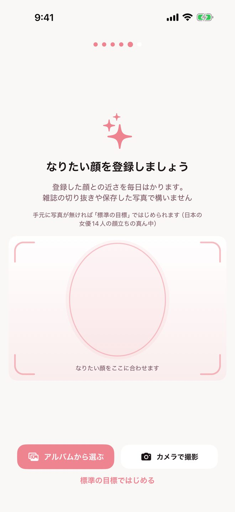
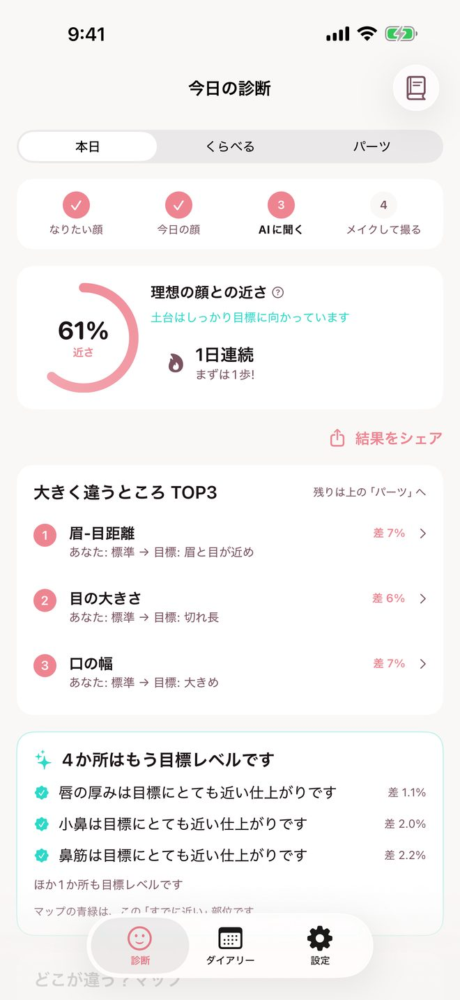
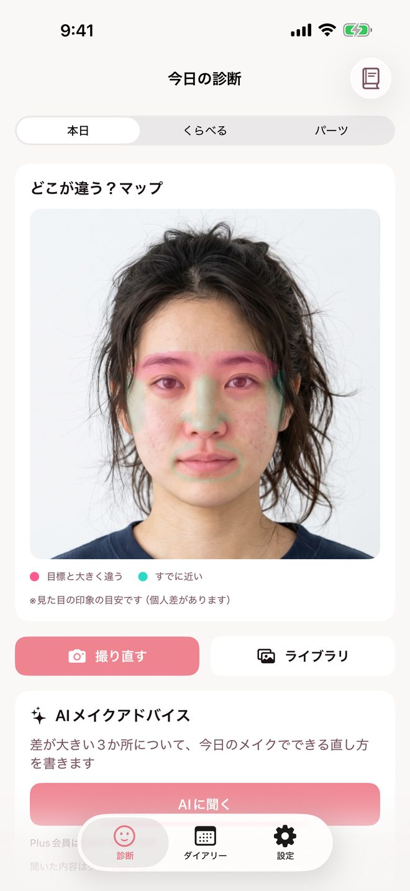
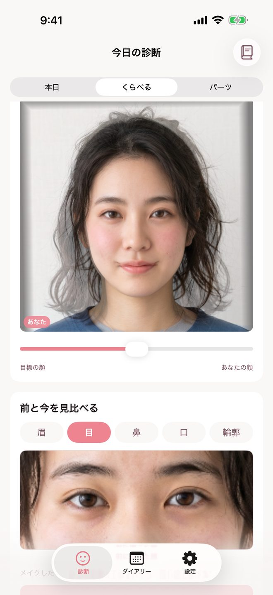

なりたい顔と、今日の顔。どこが違うかが、色で出る。
なりたい顔の写真を1枚えらんで、今日の顔を撮るだけです。近さが0〜100%で出て、顔の写真の上に色が付きます。ピンクはなりたい顔と大きく違うところ、青緑はすでに近いところです。撮った写真は端末の外へ出ません。
アカウント登録は要りません。無料のまま使い続けられます。



使い方は4つの手順です
- なりたい顔の写真を1枚えらぶ保存してある憧れの写真でも、調子のよかった日の自分の写真でもかまいません。
- 今日の顔を撮るなりたい顔との近さが0〜100%で出ます。ここまでが1回の診断です。
- どこが違うかを見る顔の上の色と、眉・目・鼻・口・輪郭ごとのカードで確かめます。
- AIに直し方を聞く違いが大きい3か所について、今日のメイクでできる直し方が、その場で画面に出ます。

色の読み方は2つだけです
- ピンク: なりたい顔と大きく違うところ今日のメイクで先に手を入れる場所です。
- 青緑: なりたい顔にすでに近いところいまのままでよい場所です。
なりたい顔と今日の顔を重ねて、つまみを左右に動かしながら見比べることもできます。同じ画面で、メイクの前と後の写真を並べて、どこが変わったかを自分の目で確かめられます。
色と数字は、見た目の印象の目安です。写真の明るさや角度で変わります。
撮った写真は、端末の外へ出ません
顔の分析は、お使いの iPhone や Android 端末の中だけで終わります。すっぴんの写真も、なりたい顔の写真も、こちらのサーバーには届きません。
- アカウント登録は要りません
- 「AIに聞く」を押したときに送るのは、測った数値と、アプリが付けた顔立ちを表す3つのことばだけです。写真は送りません
- アプリを消すと、写真も記録もすべて消えます
無料で使えて、回数を増やしたい人には Plus があります
| 診断 | 使い始めの7日間は何回でも無料。8日目からは1日2回まで無料 |
|---|---|
| AIの直し方 | 週に1回まで無料。同じ週に新しくもう1回聞くなら1回 120円。一度読んだ内容は、あとから無料で読み返せます |
| ミラメイク Plus | 月 980円 または 年 3,800円。診断とAIの直し方が何回でも使え、なりたい顔を5枚まで登録でき(無料は1枚)、撮った日の顔と点数の記録が期限なしで残ります |
金額は日本の App Store の価格です。無料の場合、撮った日の顔と点数の記録は7日間残ります。Plus は自動で更新され、ストアの設定からいつでもやめられます。購入の前に、ストアの確認画面で金額が出ます。
動画や記事で紹介してくださる方へ
- アプリの名前、アイコン、画面の録画とスクリーンショットは、連絡なしでお使いいただけます。
- ミラメイクからお願いした投稿には、「PR」の表記をお願いしています。無料コードだけをお渡しした場合も同じです。
- 感想の言い回しはお任せしています。使いにくかった点も、そのまま話してください。
- ストアのレビューを書くお願いはしていません。
ご相談は m.ryota1222@gmail.com までお送りください。